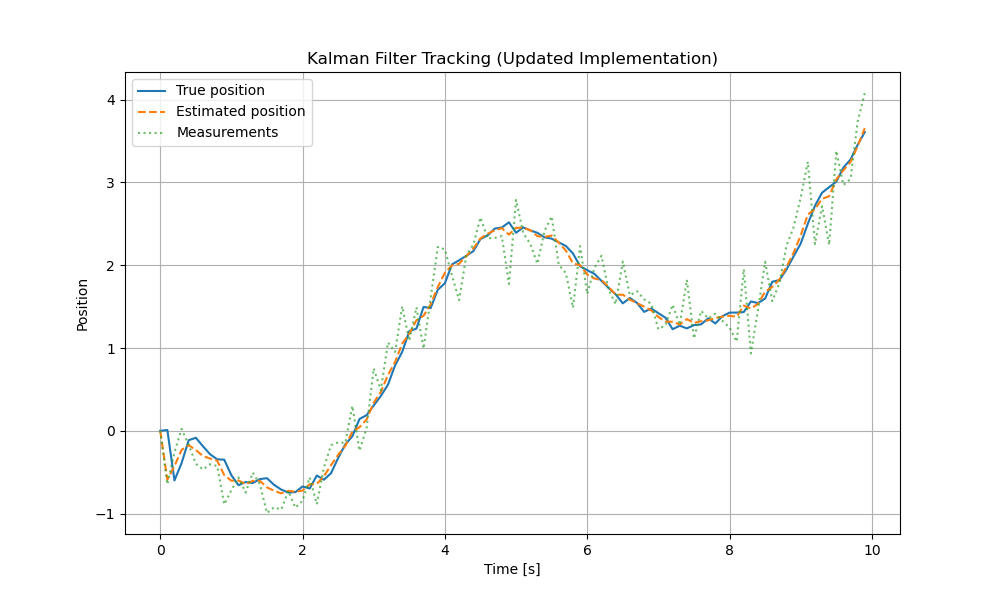

Kalman Filter Implementation
With continuouse state-space model state-space equation:
\[\begin{split}\dot{x} = Ax + Bu + \sqrt{Q_{C}} v(t)\\
y = Cx + \sqrt{R} w(t)\end{split}\]
Discretization the model into:
\[\begin{split}x_{k} = x_{k-1} + T_s (A x_{k-1} + B u_{k-1}) + \sqrt{Q_c T_s}\, v_{k-1} \\
y_k = C x_k\end{split}\]
c = [1, 0]
function x_dot = condyn(x, u, A, B)
x_dot = A * x + B * u
end
function x_k = disdyn(x, u, A, B, T_s, Q_c)
n = length(x);
x_k = x + T_s * condyn(x, u, A, B) + \sqrt(Q_c * T_s) * random(n, 1)
end
function y = measure(x, c)
y = c * x
end
Note
condyn = continuous dynamic
disdyn = discrete dynamic
A = transition matrix of continuous state
B = input matrix of continuous state
for k = 2:N_sample
% true state anf measurement
u = sin(t(k - 1));
[xk, ~] = disdyn(x_est_store(:, k - 1), u, A, B, T_s);
x_store(:, k) = xk + sqrt(Q_c * T_s) * randn(2, 1);
y_store(1, k) = measure(x_store(:, k), c) + sqrt(R) * randn(1, 1);
% kalman filter
% next state prediction and error covariance update
[xk, Ak] = disdyn(x_est_store(:, k - 1), u, A, B, T_s);
x_est_store(:, k) = xk;
p = Ak * p * Ak' + Q_d;
% estimate measurement, cross covariance, auto covariance, kalman gain
y_est = measure(x_est_store(:, k), c);
p_xy = p * c;
p_yy = c * p * c' + r; % innovation covariance
k = p_xy/p_yyy; % kalman gain
x_est_store(:, k) = x_est_store(:, k) + k *y_store(1, k) - y_est); % update estimate
p = (eye(2) - k * c) + p; update error covariance
end
Python implementation
import numpy as np
import matplotlib.pyplot as plt
# -----------------------------
# Parameters
# -----------------------------
Ts = 0.1 # sampling time
N_sample = 100 # number of samples
A = np.array([[0, 1],
[0, 0]]) # continuous-time A
B = np.array([[0],
[1]]) # continuous-time B
c = np.array([[1, 0]]) # measurement matrix
Q_c = np.array([[0.01, 0],
[0, 0.01]]) # continuous process noise
R = 0.1 # measurement noise
Q_d = Q_c * Ts # discrete process noise
# -----------------------------
# Storage initialization
# -----------------------------
x_store = np.zeros((2, N_sample))
y_store = np.zeros(N_sample)
x_est_store = np.zeros((2, N_sample))
p = np.eye(2) # initial error covariance
x_store[:, 0] = [0, 0]
x_est_store[:, 0] = [0, 0]
t = np.arange(N_sample) * Ts
# -----------------------------
# Functions
# -----------------------------
def condyn(x, u, A, B):
"""Continuous dynamics"""
return A @ x + B.flatten() * u
def disdyn(x, u, A, B, Ts):
"""Discrete dynamics and linearized Ak"""
xk = x + Ts * condyn(x, u, A, B)
Ak = np.eye(len(x)) + Ts * A # linearized discrete-time transition
return xk, Ak
def measure(x, c):
"""Measurement function"""
return c @ x
# -----------------------------
# Simulation loop
# -----------------------------
for k in range(1, N_sample):
u = np.sin(t[k-1])
# True system + measurement noise
xk, _ = disdyn(x_est_store[:, k-1], u, A, B, Ts)
x_store[:, k] = xk + np.random.multivariate_normal([0,0], Q_c*Ts)
y_store[k] = measure(x_store[:, k], c) + np.random.normal(0, np.sqrt(R))
# Kalman filter prediction
xk_pred, Ak = disdyn(x_est_store[:, k-1], u, A, B, Ts)
x_est_store[:, k] = xk_pred
p = Ak @ p @ Ak.T + Q_d
# Measurement update
y_pred = measure(x_est_store[:, k], c)
p_xy = p @ c.T
p_yy = c @ p @ c.T + R
K = p_xy / p_yy # Kalman gain
x_est_store[:, k] = x_est_store[:, k] + K.flatten() * (y_store[k] - y_pred)
p = (np.eye(2) - K @ c) @ p
# -----------------------------
# Plot results
# -----------------------------
plt.figure(figsize=(10,6))
plt.plot(t, x_store[0, :], label='True position')
plt.plot(t, x_est_store[0, :], label='Estimated position', linestyle='--')
plt.plot(t, y_store, label='Measurements', linestyle=':', alpha=0.7)
plt.xlabel('Time [s]')
plt.ylabel('Position')
plt.title('Kalman Filter Tracking (Updated Implementation)')
plt.legend()
plt.grid(True)
plt.show()
{kind=link}

Kalman filter simulation results: true state, measurements, and estimated state.